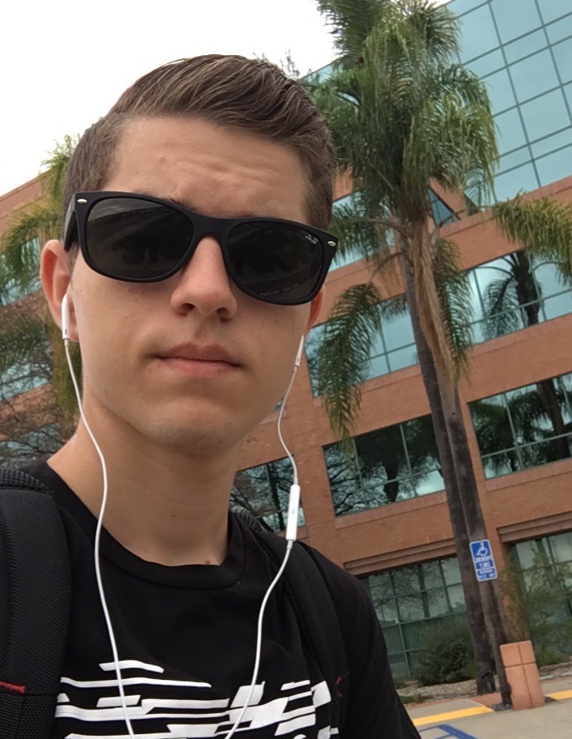

About Me

My name is Dayton Mills, and I am 19 years old.
I recently moved to San Diego after residing in Branson, Missouri for a significant portion of my life.
It was there I built my first PC from scrapped parts I dug out of abandoned storage units.
From that moment on, I spent all of my free time online. I have had many interests across graphic design, video editing, to web design/development.
After graduating high school, I spent a considerable amount of time traveling the country and freelancing for prospective clients.
I eventually settled in San Diego and enrolled in the UCSD Coding Bootcamp, to advance my career in full-stack web development.
Connect with me